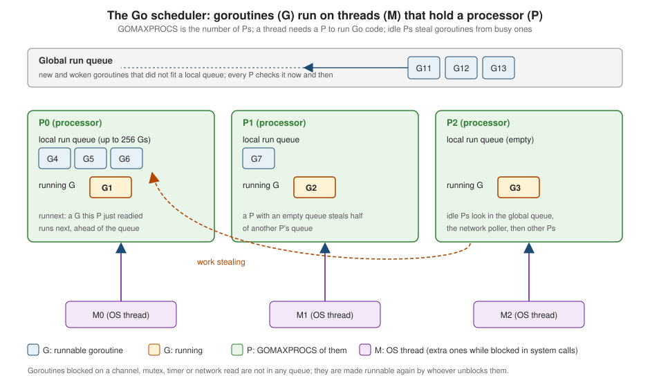

Goroutines and the Scheduler
|
This content was generated with the assistance of AI and should be verified against the official documentation before being relied on in production. |
This page is written against Go 1.27 (go1.27.2), checked on 2026-10-18; every go.mod shown has the line go 1.27.
A goroutine is Go’s unit of concurrent execution: a function call that runs independently of its caller, started
with the go keyword and scheduled by the Go runtime rather than by the operating system. Goroutines are cheap enough
that a program routinely runs tens of thousands of them, and they are the reason Go’s concurrency model is built into
the language instead of a library. This page explains what the go statement guarantees (and what it does not), how
goroutines start, end, fail and leak, how the runtime scheduler multiplexes them onto operating-system threads, what
GOMAXPROCS means and how it became container-aware in Go 1.25, how asynchronous preemption (Go 1.14) changed what
programs can rely on, and what the goroutine-leak profile (generally available in Go 1.27) adds. The pages that build on
it are Channels and Select,
Concurrency Patterns,
Context,
Sync and Atomics and
Memory Model and Data Races.
Every example was compiled, vetted with go vet and run with Go 1.27.2 (the ones that discuss races were also run with
-race); the output shown is the real output, and the compiler, vet and runtime messages are copied from real runs.
Examples whose output could depend on scheduling are written so that it does not (results are collected by index or
sorted). Where a number depends on the machine, the text says so. The go.mod of the example module is:
module example.com/shelf
go 1.27The examples continue the shelf library-catalogue scenario that the other Go pages use. For the same ideas in Rust
(threads, channels and async) see Threads and Message
Passing; the last sections of this page compare Go with other languages on this site.
Why goroutines exist
Operating-system threads are expensive: each one reserves stack memory (typically megabytes of address space), is
created and switched by the kernel, and a server that dedicates one thread to each connection runs out of them long
before it runs out of work. The alternative, a single thread driven by callbacks or async state machines, scales but
splits straightforward code into fragments. Go takes a third route, described in the language FAQ (section
Why goroutines instead of threads?): write ordinary blocking code, one goroutine per
task, and let the runtime make that cheap.
A goroutine therefore has three properties that distinguish it from a thread:
-
a small, growable stack. A new goroutine starts with a stack of about 2 KiB (the runtime constant
stackMinis 2048 bytes; since Go 1.19 the initial size is adapted to the average stack use the runtime observes). When the stack runs out, the runtime allocates a larger one, copies the contents and adjusts the pointers into it; the collector shrinks stacks that are mostly empty. The limit is 1 GB per goroutine on 64-bit systems (250 MB on 32-bit), set withruntime/debug.SetMaxStack; -
user-space scheduling. Switching between goroutines is done by the Go runtime, in user space, without a system call, and is much cheaper than switching threads;
-
multiplexing. Many goroutines run on a few operating-system threads, so blocking on a channel or a mutex parks the goroutine and frees its thread for other work.
The example starts 100000 goroutines that all exist at the same time (they are parked on a channel until it is closed) and sums their indexes. On the laptop used for this page the whole run, including compilation, took about half a second.
package main
import (
"fmt"
"sync"
"sync/atomic"
)
func main() {
const n = 100_000
var total atomic.Int64
var wg sync.WaitGroup
start := make(chan struct{})
for i := range n {
wg.Go(func() {
<-start // all 100000 goroutines exist (parked) at the same time
total.Add(int64(i))
})
}
close(start)
wg.Wait()
fmt.Println("goroutines run:", n, "sum of ids:", total.Load())
}goroutines run: 100000 sum of ids: 4999950000Source: sync: WaitGroup.Go
The same program with 100000 operating-system threads would exhaust the default limit that Go itself imposes on threads
(debug.SetMaxThreads, 10,000) and most operating-system limits. Goroutines are not free (each one costs at least its
stack and its closure, and the runtime tracks them), but the cost is small enough that "one goroutine per request" or
"one goroutine per connection" is the normal design.
The go statement
The specification defines the statement in section Go statements:
-
gois followed by a function or method call, which starts executing as an independent concurrent thread of control (a goroutine) in the same address space; -
the function value and the arguments are evaluated as usual in the calling goroutine, and only then does the new goroutine start executing the call. Unlike an ordinary call, the caller does not wait for it to complete;
-
when the function returns, the goroutine ends. Any return values are discarded;
-
a built-in function whose result must be used (such as
len) cannot be the operand ofgo, exactly as it cannot be used as an expression statement; the operand may not be parenthesized.
The "evaluated in the calling goroutine" rule is the one that surprises people. In the example, the argument expression
title(t) is evaluated by main before the goroutine starts, so changing t afterwards does not change what the
goroutine receives:
package main
import "fmt"
func title(s string) string {
fmt.Println("evaluating argument:", s)
return s
}
func show(label, s string) {
fmt.Println(label, s)
}
func main() {
t := "Dune"
done := make(chan struct{})
// The function value and its arguments are evaluated NOW, in the calling goroutine.
go func(s string) {
show("goroutine got:", s)
close(done)
}(title(t))
t = "Emma" // does not affect the already-evaluated argument
<-done
fmt.Println("main still sees:", t)
}evaluating argument: Dune
goroutine got: Dune
main still sees: EmmaThe common forms of the statement are a function literal called immediately (go func() { ... }()), a call of a
named function (go lookup(title)) and a method call (go store.Reindex()). Method values are evaluated at the go
statement too: with go b.Print(), the receiver b is evaluated (and, for a value receiver, copied) before the
goroutine runs.
The compiler rejects the forms the spec forbids. Each message below is from compiling one snippet in a main function
with a function lookup(title string) int and a slice titles:
| Snippet | Real compiler message |
|---|---|
|
|
|
|
|
|
|
|
The last row is the classic slip of forgetting the final (). All four messages are the real output of compiling each
snippet on its own (the position 8:5 is the go keyword).
Because return values are discarded, a goroutine reports its result in one of three ways: by sending it on a channel
(see Channels and Select), by writing it to a variable that the
parent reads after synchronizing (a WaitGroup, a channel receive, a mutex), or by calling a callback. An error cannot
be returned to the caller; it has to be carried the same way. The errgroup package in golang.org/x/sync packages the
"run these, wait for them and keep the first error" pattern, which
Concurrency Patterns covers.
Starting goroutines and waiting for them with sync.WaitGroup
Starting a goroutine is one keyword; knowing that it has finished is the part that needs a tool. The standard tool is
sync.WaitGroup, a counter that Wait blocks on until it reaches zero. Since Go 1.25 the method WaitGroup.Go
packages the three steps people used to write by hand (Add(1), go, defer Done()):
package main
import (
"fmt"
"strings"
"sync"
)
type Book struct {
Title string
Pages int
}
// summarize runs in its own goroutine and reports through a shared slice slot.
func summarize(b Book) string {
return fmt.Sprintf("%s (%d pages)", b.Title, b.Pages)
}
func main() {
books := []Book{{"Dune", 612}, {"Emma", 474}, {"Ulysses", 730}}
lines := make([]string, len(books))
var wg sync.WaitGroup
for i, b := range books {
wg.Go(func() { // Go 1.25: Add(1) + go + defer Done()
lines[i] = summarize(b) // each goroutine writes its own element
})
}
wg.Wait() // happens-before: all writes are visible after Wait returns
fmt.Println(strings.Join(lines, "\n"))
}Dune (612 pages)
Emma (474 pages)
Ulysses (730 pages)Source: sync: WaitGroup.Go
Three details of that example matter:
-
each goroutine writes its own slice element (
lines[i]), so the goroutines do not share any variable they write, andWaitprovides the happens-before edge that makes the writes visible tomain: the documentation says the return fromf"synchronizes before" the return of anyWaitcall it unblocks; -
iandbare per-iteration variables (next section), so each goroutine sees its own element; -
the function passed to
Gomust not panic (the documentation states this: a panic in a goroutine is not recoverable by the caller, see below).
Before Go 1.25 the same code was written with Add and Done. That form is still correct, and still common in older
code, but it has two classic mistakes that go vet reports:
package main
import (
"fmt"
"sync"
)
func worker(wg sync.WaitGroup, id int) { // copies the WaitGroup
defer wg.Done()
fmt.Println("worker", id)
}
func main() {
var wg sync.WaitGroup
for i := range 2 {
go func() {
wg.Add(1) // too late: Wait may already have returned
defer wg.Done()
fmt.Println("job", i)
}()
}
wg.Wait()
worker(wg, 1)
}e16/main.go:8:16: worker passes lock by value: sync.WaitGroup contains sync.noCopy
e16/main.go:23:9: call of worker copies lock value: sync.WaitGroup contains sync.noCopy
e16/main.go:17:10: WaitGroup.Add called from inside new goroutineSource: waitgroup analyzer
The waitgroup analyzer (added to go vet in Go 1.25, see the vet notes) reports
Add called from inside the new goroutine, where it can race with Wait, which may then see a zero counter and return
before the goroutine has started. The copylocks analyzer reports passing a WaitGroup (or a Mutex, or anything with
a noCopy marker) by value: the callee then calls Done on a copy, so Wait never returns. Pass *sync.WaitGroup, or
better, use WaitGroup.Go and avoid the callee altogether. In Go 1.27 the go fix modernizer that converts the old
pattern to WaitGroup.Go is called waitgroupgo (the vet analyzer keeps the name waitgroup); given the loop
for _, title := range []string{"Dune", "Emma"} {
wg.Add(1)
go func() {
defer wg.Done()
fmt.Println(title)
}()
}
wg.Wait()the command go fix -diff -waitgroupgo ./... prints this real rewrite (the two header lines with the file path are
omitted):
@@ -8,11 +8,9 @@
func main() {
var wg sync.WaitGroup
for _, title := range []string{"Dune", "Emma"} {
- wg.Add(1)
- go func() {
- defer wg.Done()
+ wg.Go(func() {
fmt.Println(title)
- }()
+ })
}
wg.Wait()
}Source: Go 1.27 release notes: go fix
Loop variables are per iteration (Go 1.22)
Before Go 1.22 a for loop declared one variable that every iteration reused, so a goroutine or closure started in
the loop and still running after the loop advanced saw the later value. The "every goroutine prints the last value"
bug was the most common concurrency mistake in Go. Since Go 1.22 each iteration has its own copy, for modules whose
go.mod says go 1.22 or later. The version comes from the go line of the module that contains the loop, not from
the toolchain, so old modules keep the old semantics until their go line is raised.
The next program is run twice, once in a module with go 1.21 and once with go 1.22; every goroutine is started
before any of them reads i (they wait on start), which makes the old behaviour deterministic:
package main
import (
"fmt"
"slices"
"sync"
)
func main() {
var (
wg sync.WaitGroup
mu sync.Mutex
seen []int
start = make(chan struct{})
)
for i := 0; i < 3; i++ {
wg.Add(1)
go func() {
defer wg.Done()
<-start // every goroutine is created before any of them reads i
mu.Lock()
seen = append(seen, i)
mu.Unlock()
}()
}
close(start)
wg.Wait()
slices.Sort(seen)
fmt.Println(seen)
}With go 1.21 in go.mod, go vet reports the capture, and the program prints:
main.go:22:24: loop variable i captured by func literal
[3 3 3]With go 1.22 (or go 1.27) the same source prints:
[0 1 2]The idiom of redeclaring the loop variable at the top of the body to force a copy, which older code uses, is therefore unnecessary in modules at go 1.22
or later, and the forvar modernizer removes it. The per-iteration rule covers the three-clause for loop and
for range loops alike; Control Flow explains the rule itself. Code
generated or vendored from modules with an older go line keeps the old behaviour, which is another reason to keep
the line current (see
Toolchain Versions and Compatibility).
Goroutine lifetime and program exit
A goroutine ends in exactly one of four ways: its function returns, it calls runtime.Goexit, it panics and the panic
is not recovered (which ends the whole program), or the program exits. It cannot be killed or interrupted from
outside: Go has no goroutine handle and no goroutine ID in the public API. The only way to stop a goroutine is to ask it to stop, using a
channel close, a context.Context (see Context) or a flag it polls.
The state a goroutine moves through is simple:
Tracebacks and the scheduler trace show the state as text, for example running, runnable, chan receive,
sync.WaitGroup.Wait, select, sleep or syscall (the text in brackets after the goroutine number in
goroutine 7 [chan receive]:).
The main goroutine and program exit
The specification (Program execution) says that when main.main returns the
program exits, and it "does not wait for other (non-main) goroutines to complete". That makes the most common beginner
program wrong: starting goroutines and returning. The next program makes the effect deterministic: the goroutine is
blocked forever, so nothing it would print can appear, and main returning discards it.
package main
import "fmt"
func main() {
release := make(chan struct{}) // never closed or sent to
go func() {
<-release // blocks forever
fmt.Println("worker: never printed")
}()
fmt.Println("main: done")
// main returns here; the program exits and the blocked goroutine is discarded
}main: doneA program that does go work() followed by time.Sleep(time.Second) "works" only until the work takes longer than the
sleep; waiting for the goroutine (a WaitGroup, a channel, errgroup) is the only correct way. The same rule means
that os.Exit, a log.Fatal or an unrecovered panic anywhere ends every goroutine at once, without running deferred
functions: defer runs only for the function that ends normally or panics inside the goroutine’s own stack.
runtime.Goexit ends only the calling goroutine, after running its deferred calls. It is not a panic, so recover
returns nil during a Goexit. Calling it in the main goroutine ends that goroutine but not the program; the program
then runs until the other goroutines finish and crashes with a deadlock error if there are none left. The testing
package uses Goexit to implement t.FailNow and t.Skip.
package main
import (
"fmt"
"runtime"
)
func main() {
done := make(chan struct{})
go func() {
defer close(done)
defer fmt.Println("deferred call runs")
func() {
runtime.Goexit() // terminates only this goroutine, after running its defers
fmt.Println("unreachable")
}()
fmt.Println("unreachable too")
}()
<-done
fmt.Println("main continues")
}deferred call runs
main continuesSource: runtime: Goexit
Panics in goroutines
A panic unwinds the stack of the goroutine that raised it, running that goroutine’s deferred calls. If none of them
recovers, the runtime prints the panic and a traceback and terminates the whole program with exit status 2, even if
the panic happened in a goroutine that nobody is waiting for. recover works only in a deferred function of the
goroutine that panicked: a defer/recover in main does not catch a panic in another goroutine.
package main
import (
"fmt"
"time"
)
func main() {
defer fmt.Println("main: deferred call (never runs)")
go func() {
var titles []string
fmt.Println(titles[3]) // index out of range
}()
time.Sleep(time.Second)
fmt.Println("main: unreachable")
}The program above dies a moment after starting. The text is the real output (the goroutine number depends on how many
goroutines the runtime had already created; the main function’s deferred call never runs):
panic: runtime error: index out of range [3] with length 0
goroutine 19 [running]:
main.main.func1()
example.com/shelf/e06/main.go:13 +0x1c
created by main.main in goroutine 1
example.com/shelf/e06/main.go:11 +0x60The traceback names the function that panicked and, on the created by line, the function and goroutine that started
it, which is usually the quickest way to find a stray goroutine. To turn a panic into an error, every goroutine needs its
own recover. Libraries that start goroutines on behalf of callers (worker pools, errgroup-like helpers) usually wrap
each task this way:
package main
import (
"errors"
"fmt"
"sync"
)
// safely converts a panic in fn into an error; recover only works in the
// goroutine that panicked, so every goroutine needs its own wrapper.
func safely(fn func()) (err error) {
defer func() {
if r := recover(); r != nil {
err = fmt.Errorf("recovered: %v", r)
}
}()
fn()
return nil
}
func main() {
var wg sync.WaitGroup
errs := make([]error, 2)
wg.Go(func() {
errs[0] = safely(func() {
var titles []string
_ = titles[3]
})
})
wg.Go(func() {
errs[1] = safely(func() {}) // no panic
})
wg.Wait()
fmt.Println(errors.Join(errs...))
fmt.Println("second:", errs[1])
}recovered: runtime error: index out of range [3] with length 0
second: <nil>Swallowing every panic hides bugs (nil dereferences, out-of-range indexes), so recover only at a boundary that can
report it, such as an HTTP server, which does this for each request goroutine (it logs the panic and the stack, and
keeps serving). net/http recovers per request; nothing else does it for you.
Deadlock
If every goroutine is blocked and none can ever be woken, the runtime detects it and aborts. It can do so only when
all goroutines are blocked on things the runtime itself manages (channels, mutexes, WaitGroup, select without a
ready case); one goroutine waiting on the network, a timer or a system call defeats the check, because that goroutine
may yet wake the others.
package main
import "fmt"
func main() {
loans := make(chan string)
fmt.Println("waiting for a loan")
fmt.Println(<-loans) // nobody else exists to send
}waiting for a loan
fatal error: all goroutines are asleep - deadlock!
goroutine 1 [chan receive]:
main.main()
example.com/shelf/e09/main.go:8 +0x70Source: Go FAQ: Goroutines
The message ends the program with status 2 and a traceback of every goroutine (here only main, in
[chan receive]). A partial deadlock, where some goroutines are stuck but others keep running, produces no message at
all; that case is a goroutine leak and has its own section below. Run-time errors that cannot be recovered have the same
shape: fatal error: all goroutines are asleep - deadlock!, fatal error: concurrent map writes (a detected data race
on a map), fatal error: stack overflow and fatal error: out of memory are fatal errors, not panics, so recover
does not catch them.
Data races
When two goroutines access the same variable at the same time, and at least one of the accesses is a write, and nothing
orders them, the program has a data race. The Go memory model (The Go Memory Model) says what
orders accesses: the go statement is synchronized before the goroutine starts; channel operations, mutexes,
sync.Once, WaitGroup and the sync/atomic operations create ordering edges; the end of a goroutine is not
synchronized with anything. A racy program has no guaranteed behaviour, and the failures are intermittent: they depend on
the number of CPUs, the load and the compiler’s optimizations.
The following program increments a shared counter from four goroutines without synchronization. c.loans++ is a
read, an add and a write, so increments are lost; the final value is not 4000 in general (the first of two normal runs
printed 4000 and the second 3000, which is the point: it varies).
package main
import (
"fmt"
"sync"
)
type Counter struct {
loans int // shared, unsynchronized
}
func main() {
var c Counter
var wg sync.WaitGroup
for range 4 {
wg.Go(func() {
for range 1000 {
c.loans++ // read-modify-write: a data race
}
})
}
wg.Wait()
fmt.Println("loans:", c.loans, "(expected 4000)")
}The race detector turns the intermittent failure into a deterministic report. Build or run with -race (the flag works
with go run, go build, go test and go install). The detector instruments every memory access, reports a pair of
conflicting accesses the moment they occur, and costs roughly 5 to 10 times the memory and 2 to 20 times the CPU time,
so it is used in tests and CI, not in production builds. A report starts with the line WARNING: DATA RACE; this is the
rest of the first one (addresses and goroutine numbers vary from run to run; the file path is shortened by
-trimpath):
Read at 0x00c000012118 by goroutine 10:
main.main.func1()
example.com/shelf/e05/main.go:18 +0x38
Previous write at 0x00c000012118 by goroutine 9:
main.main.func1()
example.com/shelf/e05/main.go:18 +0x48
Goroutine 10 (running) created at:
sync.(*WaitGroup).Go()
sync/waitgroup.go:238 +0x6c
Goroutine 9 (finished) created at:
sync.(*WaitGroup).Go()
sync/waitgroup.go:238 +0x6c
==================and the end of the run:
==================
loans: 3000 (expected 4000)
Found 2 data race(s)Source: Data Race Detector
Notice that the report names the line that accessed the variable (main.go:18), the other conflicting access and where
each goroutine was created. Here the creation site is inside sync.(*WaitGroup).Go, because that is the function that
executes the go statement. The process exits with status 66 when a race was found. Setting GORACE (for example
GORACE="halt_on_error=1") changes the detector’s behaviour.
The fix is to synchronize. The cheapest fix for a counter is an atomic (sync/atomic, with the typed values added in
Go 1.19); a sync.Mutex is the general tool, and a channel is right when the data should be handed from one goroutine
to another. The result is exact and the race detector is silent:
package main
import (
"fmt"
"sync"
"sync/atomic"
)
func main() {
var loans atomic.Int64 // Go 1.19 typed atomic
var wg sync.WaitGroup
for range 4 {
wg.Go(func() {
for range 1000 {
loans.Add(1)
}
})
}
wg.Wait()
fmt.Println("loans:", loans.Load())
}loans: 4000Source: sync/atomic: Int64
The remaining tools are covered elsewhere: Sync and Atomics for
mutexes, sync.Once, sync.Cond and atomics, and Memory
Model and Data Races for the happens-before rules and what the race detector can and cannot find. The detector reports
only races that actually happen in the run, so a test suite with good concurrency coverage is what makes it effective.
Concurrency is not parallelism
Rob Pike’s talk (Concurrency is not parallelism) draws the line Go is designed around:
-
concurrency is a way of structuring a program as independently executing pieces that communicate and coordinate;
-
parallelism is running pieces at the same instant on several CPUs.
A concurrent design may run on one CPU, and a parallel run needs a concurrent design. In Go the decision is separate from
the code: the same program becomes parallel when more processors are available to the scheduler. The following program
fixes GOMAXPROCS to 1, so there is one processor and nothing can run in parallel, yet it is concurrent: two goroutines
coordinate through unbuffered channels and make progress in turns.
package main
import (
"fmt"
"runtime"
)
func main() {
runtime.GOMAXPROCS(1) // concurrency without any parallelism: one P
ping, pong := make(chan int), make(chan struct{})
go func() {
for n := range ping {
fmt.Println("lend", n)
pong <- struct{}{}
}
close(pong)
}()
for n := 1; n <= 3; n++ {
ping <- n
<-pong
fmt.Println("return", n)
}
close(ping)
<-pong
}lend 1
return 1
lend 2
return 2
lend 3
return 3Source: A Tour of Go: Goroutines
The channels are what make the output deterministic: each send waits for the receiver, so the interleaving is forced rather than hoped for. Use concurrency to structure a program (a server handling many clients; a pipeline of stages; a producer and a consumer) and to hide I/O latency; use parallelism to speed up CPU-bound work that can be split. Concurrency adds cost (synchronization, scheduling, loss of determinism), so a simple sequential function that is fast enough is better than a concurrent one; the section on concurrency-free APIs below follows from that.
The scheduler: G, M and P
The runtime scheduler decides which goroutine runs on which thread. Its design (see Dmitry Vyukov’s Scalable Go Scheduler Design Doc for the history) uses three kinds of entity, abbreviated G, M and P in the runtime source and in tools such as the scheduler trace:
| Letter | Entity | What it is |
|---|---|---|
G |
goroutine |
The goroutine itself: its stack, its saved registers, its status ( |
M |
machine |
An operating-system thread. An M runs Go code only while it holds a P. The runtime creates Ms on demand and parks
idle ones; the default maximum is 10,000 ( |
P |
processor |
A scheduling context: the right to run Go code, plus a local run queue of runnable Gs, a cache for memory allocation
and the timers of goroutines sleeping on it. There are exactly |
An M needs a P to execute goroutines; the number of Ps, not the number of threads, bounds how many goroutines run Go code at the same instant. The figure shows three Ps, each running one G with a local run queue, the shared global queue and how an idle P takes work from a busy one.

The rules the figure summarizes:
-
Where new goroutines go. A
gostatement puts the new G in therunnextslot of the P that executed it (the previous occupant moves to that P’s local run queue, which holds up to 256 Gs; when it is full, half of it moves to the global queue). A goroutine that was just woken, typically by a channel send, is put inrunnexttoo, so it runs next on the same P and the data it needs is still in that CPU’s caches. This is why a producer and a consumer connected by a channel often seem to alternate. -
Picking the next G. When a P needs work it takes
runnext, then its local queue, and every 61st scheduling tick it checks the global queue first so that goroutines there are not starved (the constant is in the runtime’sschedulecode). If both are empty it polls the network poller for goroutines whose I/O is ready, and if that is empty too it steals: it picks another P at random and takes half of that P’s local queue. -
Time slices. A goroutine keeps its P until it blocks, exits, yields or is preempted. The runtime preempts a goroutine that has run for 10 ms (the constant
forcePreemptNSinruntime/proc.go), see the preemption section below. -
Blocking in the runtime. When a goroutine blocks on a channel, mutex,
select,Condor timer, only the goroutine is parked: the M keeps its P and runs another G. This is the case the model optimizes for. -
Network I/O uses the network poller (
epollon Linux,kqueueon macOS and the BSDs, completion ports on Windows). A goroutine that reads from a socket that has no data parks, the thread moves on, and the poller makes the goroutine runnable when the descriptor is ready. A program with 10,000 idle connections needs 10,000 parked goroutines but only a handful of threads. -
Blocking system calls and cgo. A system call that really blocks the thread (a read from a regular file, a DNS lookup through the C resolver, any cgo call) also blocks its G. The runtime’s background monitor thread,
sysmon, notices a P held by an M stuck in a system call and hands the P to another M, creating one if needed, so the other goroutines keep running. That is why the number of threads can exceedGOMAXPROCS, and why a program that makes many simultaneous blocking calls grows its thread count;debug.SetMaxThreadsis the safety net. When the call returns, the goroutine must acquire a P again. -
Timers belong to Ps. A sleeping goroutine is not in any run queue; when its timer fires the P makes it runnable (see Time and Timers).
-
Garbage collection uses goroutines of its own (the background workers run on Ps like any other G) and needs to stop goroutines briefly; see Memory Management and Garbage Collection.
The consequence for program design is that no goroutine can assume exclusive use of a thread, and none can assume that another will run before it, after it or at all concurrently. Fairness is approximate, the order in which runnable goroutines are picked is unspecified, and it changed between releases. The specification promises none of it, and tests that pass only because of one scheduling order are wrong.
Looking at the scheduler
The environment variable GODEBUG carries scheduler diagnostics (documented in the
runtime package): schedtrace=N prints one summary line to
standard error every N milliseconds, and adding scheddetail=1 prints every P, M and G. The program is four goroutines
that spin for 300 ms, run with GOMAXPROCS=4 GODEBUG=schedtrace=100. These are the first three lines of a real run; the
numbers differ from run to run, so read them as a format sample:
package main
import (
"fmt"
"runtime"
"sync"
"time"
)
func main() {
var wg sync.WaitGroup
for range 4 {
wg.Go(func() {
deadline := time.Now().Add(300 * time.Millisecond)
for time.Now().Before(deadline) {
}
})
}
wg.Wait()
fmt.Println("done; GOMAXPROCS =", runtime.GOMAXPROCS(0))
}SCHED 0ms: gomaxprocs=4 idleprocs=1 threads=4 spinningthreads=1 needspinning=0 idlethreads=0 runqueue=0 [ 0 0 0 0 ] schedticks=[ 0 0 0 2 ]
SCHED 108ms: gomaxprocs=4 idleprocs=0 threads=5 spinningthreads=0 needspinning=1 idlethreads=0 runqueue=0 [ 0 0 0 0 ] schedticks=[ 7 6 7 9 ]
SCHED 212ms: gomaxprocs=4 idleprocs=0 threads=5 spinningthreads=0 needspinning=1 idlethreads=0 runqueue=0 [ 0 0 0 0 ] schedticks=[ 11 10 11 13 ]Source: runtime: Environment Variables
Reading a line: gomaxprocs=4 is the number of Ps; idleprocs how many have nothing to run; threads the number of
Ms the runtime has created; runqueue=0 the length of the global queue and the bracketed list the length of each P’s
local queue; schedticks how many scheduling decisions each P has made (the counts keep growing because a goroutine is
preempted at the end of its time slice). For heavier analysis use the execution tracer and go tool trace, which show
every goroutine’s state over time; see
Profiling, Tracing and Diagnostics.
The runtime package functions
| Function | Behaviour |
|---|---|
|
Yields the processor: the calling goroutine goes to the global queue and the scheduler runs something else. It does not suspend the goroutine. Rarely needed in modern Go; real synchronization should use channels or locks. |
|
Runs the deferred calls and ends only the calling goroutine. |
|
Returns the number of goroutines that currently exist (the main goroutine included). Handy in tests and leak checks; the value is a snapshot. |
|
Sets the number of Ps and returns the previous value; |
|
Restores the runtime-computed default and automatic updates after a custom setting. |
|
The number of logical CPUs usable by the process at startup (honours the affinity mask). |
|
Wire the calling goroutine to its current thread, for libraries that keep thread-local state (OpenGL, some C
libraries, |
|
Limits the stack size of any one goroutine (default 1 GB on 64-bit systems). |
|
Limits the number of operating-system threads (default 10,000); exceeding it crashes the program. |
|
Capture the stack of the current goroutine or of all goroutines. |
An example of the numbers NumGoroutine reports; the machine-dependent value (NumCPU, the previous GOMAXPROCS) is
not printed, only a property that holds everywhere:
package main
import (
"fmt"
"runtime"
"sync"
)
func main() {
// NumCPU and the default GOMAXPROCS depend on the machine (and, on Linux, the
// cgroup CPU limit), so this example sets its own value.
prev := runtime.GOMAXPROCS(2)
fmt.Println("previous value is machine dependent:", prev >= 1)
fmt.Println("GOMAXPROCS now:", runtime.GOMAXPROCS(0)) // n < 1 only reads
fmt.Println("NumCPU is positive:", runtime.NumCPU() > 0)
fmt.Println("goroutines before:", runtime.NumGoroutine())
stop := make(chan struct{})
var started sync.WaitGroup
for range 5 {
started.Add(1)
go func() {
started.Done()
<-stop
}()
}
started.Wait()
fmt.Println("goroutines while 5 are parked:", runtime.NumGoroutine())
close(stop)
}previous value is machine dependent: true
GOMAXPROCS now: 2
NumCPU is positive: true
goroutines before: 1
goroutines while 5 are parked: 6Source: runtime: NumGoroutine
Preemption: cooperative before Go 1.14, asynchronous since
Until Go 1.14 the scheduler was cooperative at function calls: the compiler inserted a stack-bound
check in the prologue of almost every function, and the scheduler preempted a goroutine by poisoning that bound so that
its next function call entered the scheduler. A goroutine in a loop that made no function calls (a tight arithmetic loop,
for {}) could never be preempted. With GOMAXPROCS goroutines in such loops, the rest of the program froze, and the
garbage collector, which has to stop every goroutine briefly, could wait indefinitely. Books written before 2020
describe the scheduler as cooperative for this reason; Vivien’s chapter 9 is one of them.
Go 1.14 (February 2020) made goroutines asynchronously preemptible (Go 1.14 release notes). The sequence, for a goroutine that has been running for more than 10 ms:
The runtime uses SIGURG on Unix-like systems because it is rarely used by programs and does not clash with other
runtime signals; on Windows it uses a different mechanism. The goroutine is stopped at an async safe-point (nearly any
instruction in Go code, except in the runtime’s critical sections and a few code sequences), its registers are saved,
and it resumes later from the same point. Three consequences follow:
-
a loop without function calls no longer starves others, and the garbage collector can always stop the world quickly;
-
the Go 1.14 release notes warn that programs now receive more signals, so code that makes system calls must handle
EINTR(Go’s ownosandnetpackages do; code callingsyscalldirectly may not); -
the support list at the time was every platform except
windows/arm,darwin/arm,js/wasmandplan9/*; check the release notes for the platform list that applies to the version you use.
The following program is the test. GOMAXPROCS is set to 1, so there is a single P, and one goroutine spins in an empty
loop with no function calls. Before Go 1.14 main could never run again; now it wakes from its sleep and finishes.
package main
import (
"fmt"
"runtime"
"time"
)
func main() {
runtime.GOMAXPROCS(1) // a single P: only one goroutine can run Go code at a time
go func() {
for { // no function calls, no channel operations: nothing to yield on
}
}()
time.Sleep(50 * time.Millisecond)
fmt.Println("main ran even though another goroutine spins forever")
}main ran even though another goroutine spins foreverSource: Go 1.14 release notes: Runtime
The debugging switch GODEBUG=asyncpreemptoff=1 turns the signal mechanism off (the runtime documentation describes it
as useful for debugging garbage-collector issues). Running the same binary with it set, the program did not finish; it
was still running after 2 seconds and was killed, which is exactly the pre-1.14 behaviour. That makes the point that the
mechanism is real, not that anybody should use it.
Preemption does not make goroutines fair in any promised way, and a goroutine that never yields wastes a P. It also does not remove the need for synchronization: a goroutine can be stopped between any two instructions, which is why data races on plain variables are undefined behaviour in practice. The proposal text is Proposal: Non-cooperative goroutine preemption.
GOMAXPROCS and containers
GOMAXPROCS is the number of Ps, that is, the upper bound on goroutines executing Go code simultaneously. It does not
limit the number of goroutines, the number of threads blocked in system calls, or the number of threads running
garbage-collection work on behalf of the runtime. Ways to set it:
-
the environment variable
GOMAXPROCS(a positive whole number; other values are ignored); -
runtime.GOMAXPROCS(n)at run time (this stops the world briefly, so call it at start-up, not in a hot path); -
nothing: the runtime computes a default.
The default has changed, and it is worth knowing exactly how. Through Go 1.24 it was the number of logical CPUs
(runtime.NumCPU()), which is wrong in a container: a Kubernetes pod with a CPU limit of 2 on a 64-core node saw 64
processors, started 64 Ps, and was then throttled by the kernel’s CFS quota, with latency spikes as the quota ran out
mid-period. Programs worked around it with the go.uber.org/automaxprocs library. Go 1.25 builds the behaviour into the
runtime (The Go Blog: Container-aware GOMAXPROCS; see also the
Go 1.25 release notes). From the documentation of runtime.GOMAXPROCS:
-
if the
GOMAXPROCSenvironment variable is set to a positive whole number, that is the value; -
otherwise the default is the minimum of the number of logical CPUs, the process’s CPU affinity mask and, on Linux, the average CPU throughput limit derived from the cgroup CPU quota (the quota divided by the period, from
cpu.maxin cgroup v2 orcpu.cfs_quota_usandcpu.cfs_period_usin v1); -
a fractional limit is rounded up (a limit of 1.5 CPUs gives 2), and the value is never lower than 2 unless the machine or affinity mask itself has fewer than 2 CPUs;
-
the runtime re-computes the default periodically (at most once per second, less when idle) and updates it if the CPU count, the affinity mask or the cgroup quota changed, for example when a container’s CPU limit is changed. Setting the value by environment variable or by calling
GOMAXPROCSswitches the automatic updates off, andruntime.SetDefaultGOMAXPROCS()switches them back on.
The CPU limit that counts is the one in the container runtime’s "limit" option, not the "request", so a pod that only sets a request, with no limit, still sees all of the node’s CPUs. The Kubernetes side is described in Resource Management.
The behaviour depends on the go line of the main module’s go.mod: the settings are GODEBUG values whose defaults
follow the language version. For a module that declares go 1.24 or lower the old behaviour (NumCPU, no updates) stays
in effect; for go 1.25 and later the new one applies. The two switches are containermaxprocs=0 (ignore cgroups) and
updatemaxprocs=0 (never update), and they can be set with //go:debug lines, with godebug lines in go.mod, or
with the GODEBUG environment variable (see Go, Backwards Compatibility, and GODEBUG).
The program prints both values. The first run is with the environment variable set (the output is the same on every machine); the second run is without it, and prints the numbers of the machine the page was written on, a 10-core laptop, so your numbers will differ.
package main
import (
"fmt"
"runtime"
)
func main() {
fmt.Println("GOMAXPROCS:", runtime.GOMAXPROCS(0), "NumCPU:", runtime.NumCPU())
}$ GOMAXPROCS=3 ./procs
GOMAXPROCS: 3 NumCPU: 10
$ ./procs
GOMAXPROCS: 10 NumCPU: 10Source: runtime: GOMAXPROCS
How to choose a value: leave the default. Set it explicitly only to leave CPUs for something else on the same host
(GOMAXPROCS=n in a deployment manifest), or to reproduce a scheduling problem (GOMAXPROCS=1 makes many races
easier to see and many others harder). Raising it above the number of CPUs does not add throughput for CPU-bound work and
increases scheduling overhead. CPU-bound parallelism is bounded by the Ps; I/O-bound concurrency is bounded by
descriptors, memory and the other end of the connection, not by GOMAXPROCS.
The memory-limit counterpart is GOMEMLIMIT (Go 1.19), covered in
Memory Management and Garbage Collection.
Goroutine leaks
A goroutine that can never finish is a leak. Unlike a memory leak in a language with a collector, the collector does
not help: a blocked goroutine keeps its stack and every object its stack references alive, forever. Leaks accumulate
slowly (a few hundred bytes per request is enough to exhaust a server in days) and look like a gradual rise in memory,
in runtime.NumGoroutine() and in garbage-collection time. They are the most common operational bug in concurrent Go
code.
The usual causes, all of them variations on "nobody will ever complete the other half of this operation":
-
sending on a channel that nobody receives from any more (the receiver returned early on an error or a timeout);
-
receiving from a channel that nobody sends on or closes (a worker
for range chloop whose producer forgotclose); -
blocking on a
nilchannel, async.Mutexthat was never unlocked, aWaitGroupwhose counter never reaches zero or async.Condthat is never signalled; -
a
selectwithout actx.Done()or timeout case around a call that can block; -
a goroutine started per request with no owner that cancels it (a ticker loop, a retry loop, a subscriber);
-
a missing
Closeor cancellation on a resource that owns a background goroutine.
The most frequent real-world shape is the one in the example: a function starts one goroutine per item and then returns after the first result (or the first error), leaving the others blocked on a send. The unbuffered channel can accept only one value, and its sole receiver has gone. After each call the number of goroutines grows by three:
package main
import (
"fmt"
"runtime"
"time"
)
type result struct {
title string
err error
}
func fetchAll(titles []string, buffered bool) int {
var ch chan result
if buffered {
ch = make(chan result, len(titles))
} else {
ch = make(chan result)
}
for _, t := range titles {
go func() { ch <- result{title: t} }()
}
<-ch // the caller returns after the first result: the rest are stuck if unbuffered
return len(titles)
}
func settled() int {
for range 50 { // give finished goroutines a moment to exit
time.Sleep(2 * time.Millisecond)
}
return runtime.NumGoroutine()
}
func main() {
titles := []string{"Dune", "Emma", "Ulysses", "Hamlet"}
fetchAll(titles, false)
fmt.Println("unbuffered result channel, goroutines left:", settled())
fetchAll(titles, false) // every call leaks three more
fmt.Println("after a second call:", settled())
fetchAll(titles, true) // the buffer lets every sender finish
fetchAll(titles, true)
fmt.Println("after two calls with a buffer:", settled())
}unbuffered result channel, goroutines left: 4
after a second call: 7
after two calls with a buffer: 7Source: runtime: NumGoroutine
The program ends with the second fix, a channel with room for every sender (make(chan result, len(titles))): each
sender completes its send immediately and exits, whether or not anyone receives it. The other fixes are to cancel the
remaining work with a context (the goroutines check ctx.Done() in a select), to drain the channel, or to close a
done channel that the senders also select on. Which one is right depends on whether the leftover work should
finish (buffer) or stop (cancel); see Context and
Concurrency Patterns.
Preventing leaks: ownership and cancellation
The design rule from the Go code review comments (Goroutine lifetimes) is: "when you spawn goroutines, make it clear when - or whether - they exit". In practice:
-
every goroutine has an owner that knows how to stop it and how to wait for it;
-
long-lived goroutines take a
context.Context(or are stopped byClose) and select onctx.Done(); -
the function that starts the goroutines is the one that waits for them, as in
SearchAllbelow, or returns awaitfunction or aClosemethod that does; -
a goroutine never outlives the request that started it unless that is documented and cancellable.
The next example applies the rule. Watch starts a polling goroutine and returns the function the caller uses to wait
for it; cancelling the context stops the goroutine, and the counts show the goroutine is gone only after wait returns:
package main
import (
"context"
"fmt"
"runtime"
"sync"
"time"
)
// Watch polls until ctx is cancelled. The caller owns the goroutine's lifetime:
// it can cancel, and it can wait for the returned function to finish.
func Watch(ctx context.Context, interval time.Duration, poll func()) (wait func()) {
var wg sync.WaitGroup
wg.Go(func() {
t := time.NewTicker(interval)
defer t.Stop()
for {
select {
case <-ctx.Done():
return
case <-t.C:
poll()
}
}
})
return wg.Wait
}
func main() {
fmt.Println("goroutines before:", runtime.NumGoroutine())
ctx, cancel := context.WithCancel(context.Background())
wait := Watch(ctx, time.Millisecond, func() {})
fmt.Println("while watching:", runtime.NumGoroutine())
cancel()
wait() // returns only after the goroutine has finished
fmt.Println("after cancel and wait:", runtime.NumGoroutine())
}goroutines before: 1
while watching: 2
after cancel and wait: 1Source: context: WithCancel
Tests can check for leaks by comparing runtime.NumGoroutine() before and after (it is a coarse tool, since runtime
goroutines come and go) or with testing/synctest, which runs the code in an isolated "bubble" where goroutines are
tracked and virtual time makes timeouts instant; see
Benchmarks, Fuzzing and synctest.
The goroutine-leak profile (generally available in Go 1.27)
Before Go 1.27 a production leak could be diagnosed only by hand: take a goroutine profile (/debug/pprof/goroutine),
see thousands of goroutines blocked at the same line, and decide whether that is a leak or just a busy server. Go 1.26
shipped an experimental goroutine-leak profile (behind GOEXPERIMENT=goroutineleakprofile) and Go 1.27 made it
generally available and deleted the experiment flag (Go 1.27 release notes, section "Goroutine
leak profile"; the design is explained in The Go Blog: Goroutine Leak
Profiles).
The profile is named goroutineleak. It is obtained with pprof.Lookup("goroutineleak") from runtime/pprof, or, for
a service that imports net/http/pprof, from the endpoint /debug/pprof/goroutineleak, and read with
go tool pprof like any other profile. It is precise rather than heuristic: it reports goroutines that provably
cannot be woken. The runtime uses the garbage collector’s reachability analysis: a goroutine blocked on a channel or a
sync primitive is live if the primitive is reachable from a goroutine that can still run (or that can be woken by
one); a blocked goroutine whose primitive is reachable only from other blocked goroutines is leaked. Writing the
profile triggers a collection cycle that does this marking.
The program below produces three leaks (the three senders that lose the race to the single receive) and reads the profile. The output is filtered so that it is deterministic: it prints the profile header and, for each blocked frame, the function and source line without the addresses, which change on every run.
package main
import (
"fmt"
"os"
"path"
"runtime/pprof"
"strings"
"time"
)
func collect(titles []string) string {
ch := make(chan string) // unbuffered: only one send can ever succeed
for _, t := range titles {
go func(title string) { ch <- title }(t)
}
return <-ch
}
func main() {
collect([]string{"Dune", "Emma", "Ulysses", "Hamlet"})
time.Sleep(50 * time.Millisecond)
// Writing the profile runs a garbage-collection cycle that looks for goroutines
// blocked on channels or sync primitives that no live goroutine can reach.
var sb strings.Builder
if err := pprof.Lookup("goroutineleak").WriteTo(&sb, 1); err != nil {
fmt.Fprintln(os.Stderr, err)
return
}
for line := range strings.Lines(sb.String()) {
if strings.HasPrefix(line, "goroutineleak profile") {
fmt.Print(line)
}
if f := strings.Fields(line); len(f) == 4 && f[0] == "#" && strings.HasPrefix(f[2], "main.") {
fn, _, _ := strings.Cut(f[2], "+") // drop the code offset; addresses vary between runs
fmt.Println("blocked in", fn, "at", path.Base(f[3]))
}
}
}goroutineleak profile: total 3
blocked in main.collect.func1 at main.go:15Source: runtime/pprof: Profile
With debug=2 the profile writes full goroutine stacks, and the leaked goroutines are marked in their state, as in
goroutine 7 [chan send (leaked)]:. That is what /debug/pprof/goroutineleak?debug=2 returns for a service.
The limits, from the release notes and the blog post:
-
it detects goroutines blocked on channels and the primitives of the
syncpackage (the release notes name channels,sync.Mutexandsync.Cond); a goroutine blocked in a system call or on the network is not reported; -
it is conservative: because it builds on reachability, it may miss leaks whose primitive is reachable through a global variable or through the local variables of a goroutine that is still running. It reports no false positives, but it does not report every leak. Treat an empty profile as "no provable leak", not as "no leak";
-
it costs one garbage-collection cycle per profile request, so scrape it at a modest interval, not on every request;
-
in the example above, the sender goroutines receive their argument as a parameter. In a version of the same program whose goroutines captured the loop variable in a closure and started with
go func() { ch <- t }(), the profile reported zero leaks in the runs made for this page, althoughruntime.NumGoroutine()showed the goroutines were stuck. This shows why the profile does not replace the other signals: the goroutine count and a full goroutine profile remain useful.
The third-party goleak package (from Uber) checks for leftover goroutines at the end of tests, which is what many
code bases used before; the standard profile now covers the production side.
Keep your APIs concurrency-free
Bodner’s chapter 10 gives the rule of thumb that the Go code review comments phrase as "prefer synchronous functions"
(Synchronous functions): a function that returns its
result directly is easier to test, easier to reason about and easier to compose than one that starts goroutines or
takes a callback. The caller can always make a synchronous function concurrent (one go statement), but a caller
cannot remove concurrency that a function hides inside. A synchronous API also leaves the lifetime of every goroutine at
the call site, where go vet, the race detector and the reader can see it.
The example is the shelf version of that guidance. Branch.Search is synchronous and knows nothing about goroutines.
SearchAll adds the concurrency where the caller can see it, waits for every goroutine before it returns, and gives
each goroutine its own slot of the result slice, so there is no shared mutable state and no lock:
package main
import (
"fmt"
"slices"
"strings"
"sync"
)
type Book struct {
Title string
Author string
}
// Branch is a synchronous, concurrency-free API: it takes input, returns output,
// and starts no goroutines. The caller decides whether to run it concurrently.
type Branch struct {
Name string
Books []Book
}
func (b Branch) Search(author string) []Book {
var found []Book
for _, bk := range b.Books {
if strings.EqualFold(bk.Author, author) {
found = append(found, bk)
}
}
return found
}
// SearchAll adds the concurrency at the call site, where the lifetime of every
// goroutine is visible: all of them have finished when SearchAll returns.
func SearchAll(branches []Branch, author string) []Book {
results := make([][]Book, len(branches))
var wg sync.WaitGroup
for i, br := range branches {
wg.Go(func() { results[i] = br.Search(author) })
}
wg.Wait()
return slices.Concat(results...)
}
func main() {
branches := []Branch{
{"north", []Book{{"Dune", "Herbert"}, {"Emma", "Austen"}}},
{"south", []Book{{"Dune Messiah", "Herbert"}}},
{"east", []Book{{"Ulysses", "Joyce"}}},
}
for _, b := range SearchAll(branches, "herbert") {
fmt.Println(b.Title)
}
}Dune
Dune MessiahGuidelines that follow from this:
-
expose a plain function or method, not a channel, unless a stream of results is the point (see Iterators and Range-over-Func, which is often a better way to return a sequence than a channel);
-
do not return a channel and start the goroutine that feeds it inside the function unless you also give the caller a way to stop it (a context parameter, a
Closemethod), otherwise abandoning the channel leaks the producer; -
document whether a type is safe for concurrent use; the default is that it is not;
-
do not start goroutines in
initor in a package-level variable initializer; hidden background work is the hardest to stop in tests.
Debugging goroutines
-
Tracebacks. An unrecovered panic prints the stack of the panicking goroutine and exits with status 2. The environment variable
GOTRACEBACKcontrols the amount:none(no goroutine stacks),single(the default, only the current goroutine),all(all user goroutines),system(adds the runtime’s own goroutines and frames) andcrash(likesystemand then aborts, producing a core dump on Unix systems). The numbers0,1and2are older synonyms fornone,allandsystem.GODEBUG=tracebackancestors=Nadds the stacks that created each goroutine. For modules that declarego 1.27or later, tracebacks include theruntime/pprofgoroutine labels in the header line (GODEBUG=tracebacklabels=0turns that off). Labels attached withpprof.Doare a convenient way to name what a goroutine is doing (for example a request ID or a worker name) so that a dump is readable. -
Dumping all goroutines on demand. Sending
SIGQUITto a running Go program (Ctrl+\ in a terminal) prints every goroutine’s stack and exits. A service that importsnet/http/pprofreturns the same text from/debug/pprof/goroutine?debug=2, without stopping, and an aggregated view from/debug/pprof/goroutine?debug=1. -
Programmatic access.
runtime.Stack(buf, true)anddebug.Stack()return the stacks. There is no supported goroutine ID; code that parses the ID out of the trace to build "goroutine-local storage" is fighting the design, and acontext.Contextis the correct way to carry request-scoped values. -
Stack overflow. Unbounded recursion grows the goroutine’s stack until the limit and then ends the program with a fatal error (not a panic, so it cannot be recovered). The program below lowers the limit to 1 MiB so that it fails quickly. The default limit, 1 GB, is the value the first line confirms; the full output continues with the addresses and the very long repeated stack, which is why only the first lines of the real output are shown.
package main
import (
"fmt"
"runtime/debug"
)
func depth(n int) int { return depth(n+1) + 1 }
func main() {
old := debug.SetMaxStack(1 << 20) // 1 MiB instead of the 64-bit default of 1 GB
fmt.Println("default limit is 1 GB:", old == 1_000_000_000)
fmt.Println(depth(0))
}runtime: goroutine stack exceeds 1048576-byte limit
fatal error: stack overflowSource: runtime/debug: SetMaxStack
The tools that give a view over time instead of a snapshot (the execution tracer, go tool trace, the flight recorder,
the block and mutex profiles) are in
Profiling, Tracing and Diagnostics. The Go
diagnostics overview is Diagnostics.
The same idea in other languages
Every mainstream language now has a lightweight unit of concurrency, but they differ in who schedules it and what a blocking call does. The pages below are the reference for each, on this site:
| Language and page | Unit and scheduler | Compared with a goroutine |
|---|---|---|
Virtual threads, scheduled onto a pool of carrier (platform) threads by the JVM. |
The closest match: blocking code, cheap threads, user-space scheduling. Java has structured concurrency APIs and
thread interruption; Go has |
|
Suspending functions on dispatchers, with structured concurrency scopes and |
Coroutines suspend only at |
|
State machines compiled from |
|
|
An event loop on one thread, driven by |
The same split between cheap tasks and blocked calls, with the global interpreter lock limiting thread parallelism (check the page for the free-threaded build). Goroutines run in parallel across all Ps. |
|
One thread, an event loop, promises and |
No shared-memory data races on ordinary objects in one realm, and no preemption in the middle of a task; the price is that a long synchronous computation blocks everything. |
|
|
Compile-time data-race safety through |
|
|
A thread has the cost described at the top of this page; a goroutine is a managed, cheap alternative. |
|
OS threads with |
Channels exist in both ( |
Comparisons of the two styles that matter for design: in a colored-function language (C#, Kotlin, Rust, Python,
JavaScript) a function that awaits has a different type from one that does not, so asynchrony spreads through the call
graph; in Go and in Java with virtual threads it does not, and the cost is that every blocking call is a potential
scheduling point and that cancellation has to be passed explicitly (ctx).
Where the books are outdated
Both books on the section’s bibliography are older than several changes to what this page covers; where they differ, the official documentation (and this page) is the reference:
| Topic | What the books present | Current state (Go 1.27) |
|---|---|---|
Loop variables in goroutines |
Bodner chapter 10 (and Vivien chapter 9) teach copying the loop variable (or passing it as a parameter) to avoid every goroutine seeing the last value. |
Each iteration has its own variable since Go 1.22, for modules whose |
Scheduler |
Vivien chapter 9 describes the M:N scheduler as cooperative: goroutines yield at function calls and blocking operations. |
Asynchronous preemption since Go 1.14 (signals on Unix), so a loop without calls cannot starve the other goroutines or the garbage collector. |
|
Vivien chapter 9 describes the default as the number of CPUs and shows setting it in code. |
The default honours CPU affinity and, on Linux, the cgroup CPU limit since Go 1.25, and is updated while the program runs. Setting it by hand is now rarely needed (and it turns the automatic updates off). |
Waiting for goroutines |
|
|
Cancellation and leaks |
Bodner shows a |
|
Data races |
Vivien chapter 9 shows |
The same advice, plus the memory model (typed atomics since Go 1.19, sequentially consistent atomics); see Memory Model and Data Races. |
Timers and tickers in goroutine loops |
Bodner chapter 10 uses |
Since Go 1.23 unreferenced timers are collected and timer channels are synchronous (the |
Common pitfalls
-
returning from
main(or ending a test) while goroutines still run: wait for them; -
forgetting that arguments of the
gostatement are evaluated immediately, while the body runs later; -
sharing a variable between goroutines without synchronization (run tests with
-race); -
calling
wg.Addinside the goroutine, passing aWaitGroupby value, or reusing it before everyWaitreturned; -
a panic in any goroutine ends the program: recover at the boundary that owns the goroutine;
-
sending on a channel nobody receives from, or receiving from one nobody closes: a leak;
-
assuming an order of execution, fairness or that only one goroutine runs at a time;
-
starting a goroutine per item with no limit on a huge input: bound the concurrency (a worker pool, a semaphore channel,
errgroup.SetLimit); -
relying on
GOMAXPROCSto size a pool for I/O-bound work: the limit that matters is the resource being used; -
a "deadlock" that the runtime does not report because another goroutine, a timer or the network is still alive.